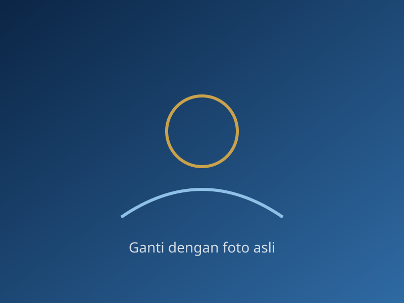

One Scholarship, Many Dreams,One Family.
Sebuah perjalanan tentang kesempatan, persahabatan, pertumbuhan, dan harapan untuk masa depan.

Tentang komunitas ini
Kami adalah penerima Bright Scholarship dari Yayasan Baitul Maal BRILiaN. Website ini adalah ruang kami menyimpan cerita, kegiatan, dan kenangan selama perjalanan belajar.
0Anggota
0Kegiatan
0Dokumentasi
Angka dihitung otomatis dari berkas JSON di folder data/.